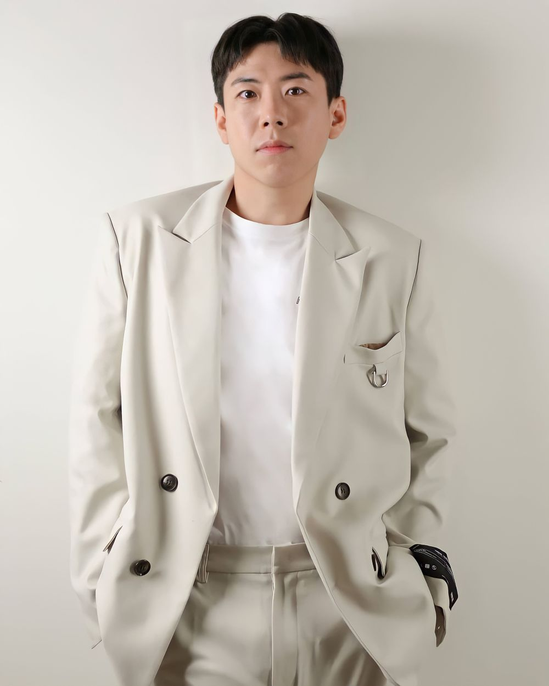

본관은 남원이며, 경기도 동두천시 출신이다. 그의 형은 희극인 양세형이다.2005년 《웃찾사》시즌 1 '땁따다'에서 희극 배우로 데뷔하였다. 소속 그룹은 "웅이네", "트리플 악셀"이다. 또한 2008년 웅이네 싱글 앨범 [Only One](현재 온라인 음원제공을 하지않으며 재생불가 상태)로 가수로서도 데뷔하였으며 켠김에왕까지 허강조류(허준,강성민(김형철,장신민과 그룹 우노멤버활동 및 우노앤베티(그룹 우노와 이의정의 활동그룹이자 마이키(터보(김정남,김종국,마이키)의 난중난색 피쳐링),조현민,류경진)멤버였던 허준과 현재의 OGN인 온게임넷 방송에 출연하여 진행한적이 있으며 OGN(온게임넷) 켠김에왕까지에 이용진과 함께 출연한적 있으나 안타깝게도 이진호는 켠김에왕까지에 나오지못했다. 현재는 SBS 런닝맨에서 유재석,지석진,김종국,하하,이광수,송지효,전소민과 활동중이다. 요즘 양세찬 깡깡짤이 유행한다. 